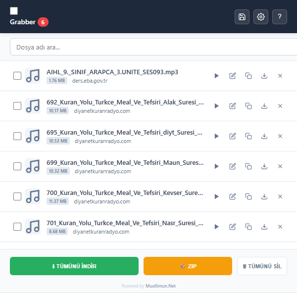

Ses, video, belge ve etkileşimli eğitim paketlerini web sayfalarından anında yakalar. Akıllı isimlendirme, reklam filtresi ve toplu ZIP desteğiyle kusursuz bir indirme deneyimi sunar.

EBA (eba.gov.tr) ve benzeri eğitim platformlarındaki ders videolarını, PDF dokümanlarını ve SCORM etkileşimli eğitim paketlerini saniyeler içinde yakalayın. İçerikleri anlamsız kodlarla değil, gerçek konu ve ders isimleriyle indirerek çevrimdışı materyal arşivinizi saniyeler içinde oluşturun.
Medya ve belge kütüphanenizi tam yetkiyle yönetmeniz için tasarlandı.
Dosyalarınız asla karışmaz! Yakalanan medyalar "videoplayback" yerine web sayfası başlığı, sanatçı veya şarkı etiketleri analiz edilerek otomatik ve temiz şekilde isimlendirilir.
Onlarca dosyayı tek tek indirmekle uğraşmayın. Seçtiğiniz tüm medyaları ve eğitim paketlerini saniyeler içinde tek bir ZIP arşivi olarak bilgisayarınıza indirin.
Gizli belgeleri aramakla uğraşmayın! Arayüzdeki "Tara" butonu veya sağ tık menüsü ile sayfa içine gömülü tüm PDF, DOC, MP4 ve MP3 dosyalarını anında listeye çekin.
İndirme listeniz temiz kalsın. Eklenti, reklam ağlarından gelen sahte medya linklerini ve 2MB altındaki sinir bozucu reklam videolarını otomatik olarak filtreler.
Her web sitesi için farklı bir kural belirleyin. "Bu sitede sadece Ses dosyalarını yakala", "Sadece Belgeleri göster" veya "Bu siteyi tamamen engelle" diyerek kontrolü elinize alın.
Kişisel verileriniz size aittir. Eklentimiz hiçbir kullanıcı verisi toplamaz, dış sunucularla bağlantı kurmaz. Tamamen açık kaynaklıdır ve işlemler cihazınızda gerçekleşir.